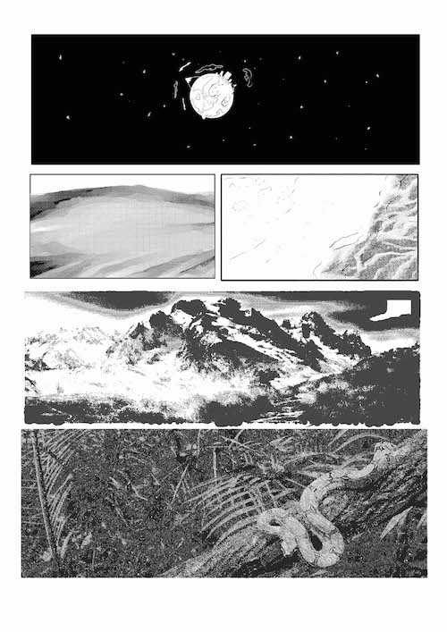
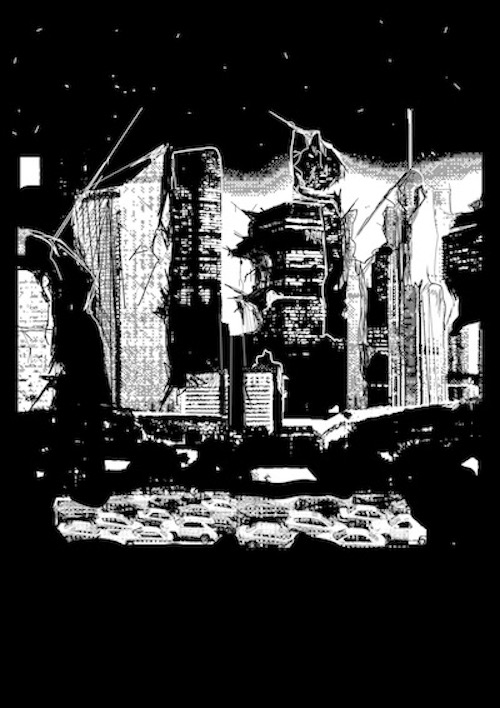
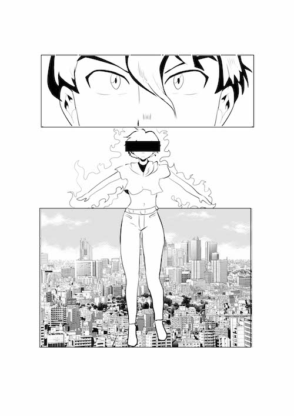

Page 1

Ouranos, a chaotic world almost entirely void of human life, gives way to nature where these human souls cannot reach. Mysterious creatures roam around at night searching for a way to eat, eager to find a way out of being eaten. Where the soul of human consciousness mustn’t stumble upon, lies something no inhabitant staying on this lonely world can understand, except one.
Page 2

Was it you who destroyed these walls, or was it us? Was I the enemy you so voraciously spit on, or was I god? A test given to the huddle of people who knew no morales with no religion to guide them, experienced revelations nothing short of biblical. Destruction is a perpendicular force to something much greater than itself, called creation. But I fear my powers are getting brittle, I have done too much and now I have an absence of time. But you, you know who you are. Don’t look for where I am child, find me amongst your feelings, seek me out and we can start again.
Page 3

From before they could remember, their species was deemed a virus. Pale buildings constructed in an instant overshadowing the mountains that took millennia to rise in stature. Yet, I heard beauty emanating from the rooftops, I heard sonic vibrations that compelled me to arrive. I have always been here. I neither am nor was, I am becoming. Now, in this moment created from sound, I stand in silence constantly awaiting destruction and nothing more.